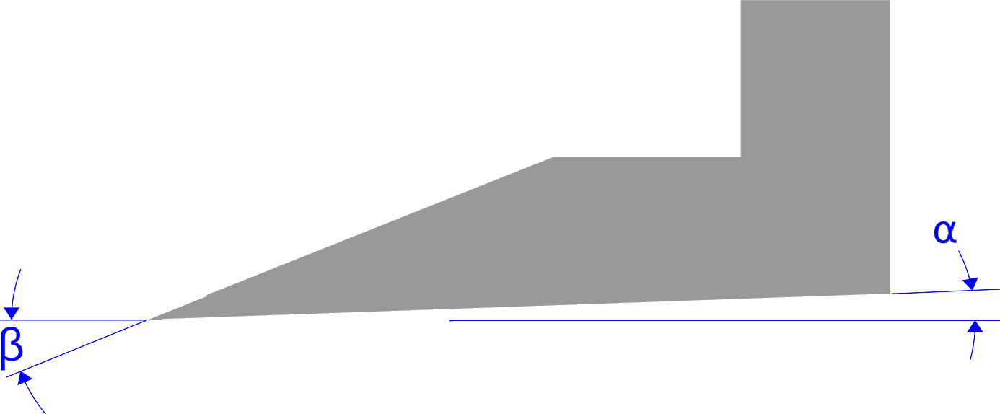
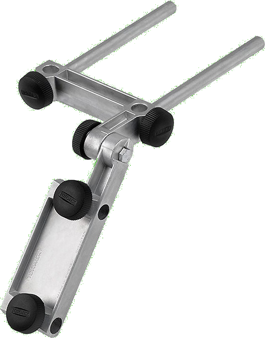
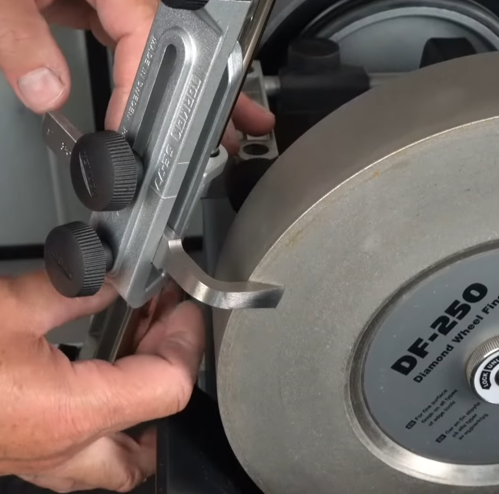

|
Router Plane
|
|

Image to the right shows nomenclature used in this outline. The vertical part of the blade (which affixes to the tool holder) is shown perpendicular to the surface of the wood.
As with chisels and plane blades, both surfaces which interface to make the cutting edge must be honed. This is the angle β in the picture to the right.
It is critical that α ≥ 0. The toe (cutting edge) must not be higher than the foot (opposite from the cutting edge). If this is not the case, the cutting edge will not engage with the wood properly and will not cut correctly.
|
How are such old tool designs still so relevant in today's world where we have the Internet and CNC systems? It is probably because we are clamoring for a simpler time.
Rich Colvin
|
|
General Guidelines
|
| Type |
β |
α |
Notes |
Recommended
Tormek Jigs |
|
General
|
30° |
2° - 5° |
Top Face: When using the Tormek to sharpen the β; angle, use the SE-77 jig.
The multi-base (MB-100 or MB-102) is also needed as the top face must be sharpened using the side of the grinding wheel.
Bottom Face: When using the Tormek to shape or sharpen the α angle, use the SE-77 jig.
|
 SE-77
SE-77
|
|

MB-102
|
|
Notes & Comments
When grinding on the side of the grinding stone, the diamond grindstones are recommended.
It is a good practice to note the blade's angle(s) in one of these ways:
- Record a reference number on the blade, and use an index card to keep the pertinent information for that blade.
This is the preferred method as it also allows for noting other information about the blade such as metal type, where & when purchased (and cost), and any other sharpening notes.
- Record the angle on the blade itself.
More Information
Books & Papers
- The Complete Guide to Sharpening by Leonard Lee
Videos & Presentations
- Tormek Live Sharpening Class - Part 3 - Chisels, plane irons & Tormek grinding wheels (YouTube video). Sebastien and Wolfgang offer some great tips on the sharpening of chisels & plane irons using the various Tormek grinding wheels, including the use of the diamond wheels.
- At 00:46, there is a great explanation of sharpening a tool with a radiused end using the SE-77 Square Edge Jig.
- At 00:52, there is a great explanation of how to use the MB-100 Multi Base.
- Tormek Live Sharpening Class - Part 9 - Sharpen a flat bevel with Tormek MB-100 on a diamond wheel (YouTube video). In this episode we learn how to use the Tormek MB-100 Multi Base to sharpen a completely flat bevel ▼, on the side of Tormek's diamond wheels DC-250, DF-250 and DE-250. For some tools, such as 🎻 luthier knives,🔪 Kiridashi knives, v-tools, chip carving knives and Japanese plane irons, a completely flat surface on the bevel is preferred over a slightly concave, which you get when you sharpen on the rounded part of the grinding wheel. For some people this is more of a personal preference.
Regardless of what might be the reason to want a flat bevel, Sèbastian and Wolfgang show how to achieve it with your Tormek wet sharpening system, They will also touch upon the differences between the different types of bevels.

Image captured from this video, showing the SE-77 and MB-102
- Tormek Live Sharpening Class - Part 20 - MB-102 Multi Base - Enhanced Knife Sharpening & Flat Bevels (YouTube video). This video covers the MB-102 jig which can be used two ways:
- For sharpening on the side of the grinding wheel (particularly the diamond grindstones). The value for this approach is:
- It allows for a flat grind on the cutting edge.
- It allows for sharpening short tools. This video demonstrates this well.
- For sharpening vertically from the horizontal position. This is a replacement for the front vertical base. Sharpening knife edges using a edge trailing approach may be preferable if you sharpen on a softer Japanese water stone (so you don't accidentally dig into the grindstone). It is also quite useful for sharpening spoon knives.
- At about 00:30, there is a great explanation of sharpening the router plane blade using the SE-77 Square Edge Jig & the MB-102 Multi Base..
Tormek is a copyrighted logo of Tormek AB. Its presentation on this site is used to help the user quickly understand when specific Tormek tools, jigs, or setting are being used. For specific information regarding Tormek AB, or its products, please refer to the www.Tormek.com.